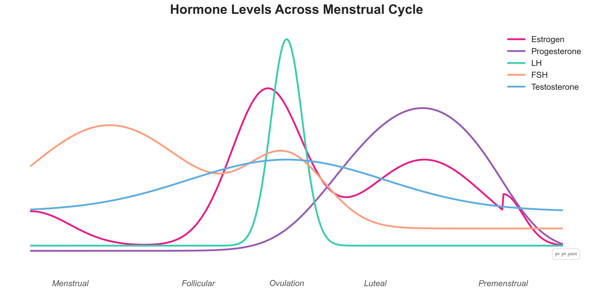

Luteal Phase: Why You Feel Awful Before Your Period
The luteal phase is the 12-14 days between ovulation and your period. It's when progesterone peaks, PMS symptoms hit, and your energy and mood shift. Here's what's actually happening and what helps.
Educational content, not medical advice. For personal concerns, please consult your doctor.
The luteal phase is the second half of your menstrual cycle — the 12-14 days between ovulation and the start of your period. During this phase, progesterone rises to prepare your uterus for a potential pregnancy. If no pregnancy occurs, progesterone drops, triggering your period and the PMS symptoms — bloating, fatigue, irritability, cravings — that come with it.[1]
But the luteal phase isn't just a fertility concept. It's the reason you feel like two different people across your cycle. The energy you had last week disappears. Workouts feel harder. Sleep gets weird. Tracking this phase helps you plan around it instead of being blindsided — and it gives your doctor real data if something feels off.
Quick Answer: What is the Luteal Phase?
It's the second half of your cycle, from ovulation to your period. Lasts about 12-14 days. Your progesterone spikes to prep your uterus for pregnancy. No pregnancy? Progesterone drops, period starts.
The luteal phase is one of the most misunderstood parts of the menstrual cycle, yet it plays a crucial role in fertility, mood, and overall health. Let's break down exactly what it is, what's happening in your body, and why it matters.
Once I started tracking my luteal phase, I finally understood why I was exhausted on day 23 and craving carbs on day 20. It wasn't random.
What is the Luteal Phase?
The luteal phase is the second half of your menstrual cycle, occurring after ovulation and lasting an average of 12-14 days until your next period begins. During this phase, the corpus luteum (leftover follicle tissue after the egg releases) produces progesterone to prepare your uterine lining for potential pregnancy.
Key facts:
- Duration: 10-17 days (12-14 day average is normal)
- Hormones: Progesterone rises, then drops if pregnancy doesn't occur
- Purpose: Prepares uterus for pregnancy; triggers period if not pregnant
- Common symptoms: PMS, bloating, breast tenderness, mood changes, fatigue
If a fertilized egg implants in your uterine lining during the luteal phase, progesterone levels stay elevated and pregnancy begins. If implantation doesn't occur, progesterone drops sharply, causing your uterine lining to shed (your period).
Think of your menstrual cycle as having two distinct halves:
- Follicular Phase: The first half, from Day 1 of your period through ovulation (when estrogen is dominant)
- Luteal Phase: The second half, from ovulation through the day before your next period (when progesterone is dominant)
If your cycle is 28 days long and you ovulate on Day 14, your luteal phase would be Days 15-28. But cycle lengths vary—we'll cover that below.

Notice how progesterone rises sharply during the luteal phase (Days 15-28)
Quick Definition
Corpus Luteum: After you ovulate, the empty follicle that released the egg transforms into a temporary gland called the corpus luteum. This structure produces progesterone, which prepares your uterus for a potential pregnancy. If pregnancy doesn't occur, the corpus luteum breaks down, progesterone drops, and your period begins.
How Long Does the Luteal Phase Last?
A normal luteal phase typically lasts 10-16 days, with the average being around 14 days.[1,2] Here's what you need to know:
- 10-16 days is considered normal
- 14 days is the average (but not everyone has this exact length)[1]
- Consistency matters: Your luteal phase length should be fairly consistent from cycle to cycle (within 1-2 days)[2]
- Less than 10 days may be concerning: A short luteal phase could indicate low progesterone and may affect fertility[1]
Unlike the follicular phase (which can vary significantly in length), your luteal phase length tends to be stable. If your cycles vary in length, it's usually because your follicular phase changes—not your luteal phase.
Example Cycle Lengths
25-day cycle: Follicular phase ~11 days + Luteal phase ~14 days
28-day cycle: Follicular phase ~14 days + Luteal phase ~14 days
32-day cycle: Follicular phase ~18 days + Luteal phase ~14 days
What's Normal vs. Abnormal Luteal Phase Length
Is a 10 Day Luteal Phase Okay?
Yeah, 10 days is on the short end of normal (the range is 10-17 days). Not trying to conceive? You're probably fine if it's consistent. Trying to get pregnant? Talk to your doctor. Some research suggests phases under 11-12 days can make implantation harder.
Normal luteal phase lengths:
- ✅ 10-17 days - within normal range
- ✅ 12-14 days - average/ideal range
- ✅ Consistent length - your luteal phase should be about the same length each cycle (±1-2 days)
Concerning luteal phase patterns:
- ⚠️ Less than 10 days (short luteal phase) - may indicate low progesterone and can affect fertility
- ⚠️ More than 17 days - could indicate pregnancy or hormonal imbalance
- ⚠️ Highly variable - swinging between 8-16 days cycle to cycle
Why Luteal Phase Length Matters
A short luteal phase (less than 10 days) can make it difficult to get pregnant because the uterine lining doesn't have enough time to prepare for implantation. This is called a "luteal phase defect."
Even if fertilization occurs, a short luteal phase means:
- The embryo may not have enough time to implant before progesterone drops
- The uterine lining may not be thick or receptive enough for implantation
- Early pregnancy loss may occur due to insufficient progesterone support
How to Measure Your Luteal Phase Length
Follow these steps to accurately determine your luteal phase length:
- Track ovulation using basal body temperature, cervical mucus, or ovulation tests
- Count the days from ovulation to the first day of your period
- Track for 2-3 cycles to determine your typical luteal phase length
- Look for consistency - your luteal phase should be within 1-2 days each cycle
A good period tracking app can calculate your luteal phase length automatically based on your symptom data. It identifies when you ovulated and tracks the time until your next period, giving you precise measurements over time.
📊 Cycle Length Calculator
Enter your period dates to calculate your average cycle length and regularity.
Try It FreeWhat Happens During the Luteal Phase?
Your body undergoes significant hormonal changes during the luteal phase as it prepares for a potential pregnancy. Here's the biological timeline:
Immediately After Ovulation (Early Luteal Phase)
- The empty follicle transforms into the corpus luteum
- Progesterone production ramps up rapidly
- Your basal body temperature increases slightly (0.5-1°F)
- Cervical mucus becomes thick and sticky (no longer egg-white consistency)
- If fertilization occurred, the embryo travels to the uterus
Mid-Luteal Phase (Peak Progesterone)
- Progesterone reaches its peak around 7 days after ovulation
- The uterine lining (endometrium) thickens and becomes receptive
- If pregnancy occurred, implantation typically happens 6-12 days after ovulation
- You may notice PMS symptoms beginning
Late Luteal Phase (Pre-Period)
- If no pregnancy occurred, the corpus luteum breaks down
- Progesterone and estrogen levels drop sharply
- PMS symptoms often intensify
- Your uterus prepares to shed its lining (menstruation)
- Your period begins, starting a new cycle
Common Luteal Phase Symptoms
Most Common Luteal Phase Symptoms:
Physical:
- Breast tenderness/swelling
- Bloating & water retention
- Food cravings (especially carbs)
- Fatigue & lower energy
- Acne & skin breakouts
- Headaches or migraines
Emotional:
- Mood swings & irritability
- Anxiety or feeling on edge
- Sadness or tearfulness
- Brain fog & difficulty concentrating
- Sleep disturbances
- Reduced social energy
Because progesterone is the dominant hormone during this phase, you'll likely notice physical and emotional changes. These symptoms are completely normal and are often referred to as PMS (premenstrual syndrome). Many luteal phase symptoms are actually PMS—read our complete guide to understanding PMS to learn more about managing these symptoms.
Physical Symptoms
- Breast tenderness or swelling - progesterone causes breast tissue to retain fluid
- Bloating and water retention - you may feel "puffy" or gain 1-3 pounds temporarily
- Increased appetite and food cravings - especially for carbohydrates, sweets, or salty foods
- Fatigue or lower energy - progesterone has a calming, sedative effect
- Mild cramping - as your uterus prepares to shed its lining
- Acne or skin changes - hormonal fluctuations can trigger breakouts
- Headaches - particularly in the late luteal phase
- Higher basal body temperature - useful for fertility tracking
Emotional and Mental Symptoms
- Mood swings or irritability - progesterone affects neurotransmitters
- Anxiety or feeling "on edge"
- Sadness or crying more easily
- Difficulty concentrating - often called "brain fog"
- Changes in sleep patterns - progesterone can make you drowsy
- Reduced social energy - you may feel more introverted
When Luteal Phase Symptoms Are Concerning
While PMS symptoms are common, you should talk to your healthcare provider if you experience:
- Severe mood symptoms that interfere with daily life (could be PMDD)
- Debilitating pain or cramping
- Heavy spotting or bleeding during the luteal phase
- A luteal phase consistently shorter than 10 days
- Symptoms that significantly affect your quality of life
Can You Get Pregnant During the Luteal Phase?
Yes—but only during the early luteal phase. Here's why this question is more nuanced than it seems:
Understanding the Fertility Window
Technically, the luteal phase begins after ovulation has already occurred. However:
- The egg is viable for 12-24 hours after ovulation[3] - If you have sex in the first day or so of the luteal phase, fertilization can still occur
- Sperm can survive up to 5 days[3] - If you had sex late in the follicular phase (just before ovulation), sperm may still be present in the early luteal phase
- Implantation happens in the luteal phase - If fertilization occurs, the embryo implants 6-12 days after ovulation (mid-luteal phase)
The Bottom Line on Luteal Phase Pregnancy
Your fertile window includes:
- The 5 days before ovulation
- The day of ovulation
- Possibly 1 day after ovulation (early luteal phase)
After the first 1-2 days of the luteal phase, your egg is no longer viable and pregnancy cannot occur until your next cycle. However, because it's difficult to know exactly when ovulation happened, it's not safe to rely on "luteal phase timing" as birth control.
Tracking Tip
If you're trying to conceive, focus on having sex during the 5 days leading up to ovulation and the day of ovulation. This maximizes your chances since sperm will be ready and waiting when the egg is released. A cycle tracking app can help you identify your fertile window by monitoring cervical mucus, basal body temperature, and cycle patterns together.
Luteal Phase vs. Other Menstrual Phases
Understanding how the luteal phase differs from the other phases of your cycle can help you make sense of your monthly patterns:
| Phase | Timing | Main Hormone | Energy Level | Fertility | Key Features |
|---|---|---|---|---|---|
| Menstrual | Days 1-5 | Low estrogen & progesterone | Low | Not fertile | Bleeding, cramps |
| Follicular | Days 6-13 | Rising estrogen | Increasing | Moderately fertile | Energy rises, positive mood |
| Ovulation | Days 14-16 | Estrogen peak, LH surge | Highest | Most fertile | Egg release, high libido |
| Luteal | Days 17-28 | Progesterone dominance | Decreasing | Not fertile | PMS symptoms, low energy |
Tracking your phases with a cycle app lets you see exactly when you transition from ovulation to luteal phase.
Why Tracking Your Luteal Phase Matters
Understanding and tracking your luteal phase can provide valuable insights into your overall health:
1. Fertility Awareness
A consistent luteal phase of at least 10 days is important for fertility. If your luteal phase is consistently short, it may indicate low progesterone, which can make it difficult for an embryo to implant and develop.
2. Early Pregnancy Detection
If your luteal phase is usually 14 days but you're now on Day 16 or 17 with no period, this could be an early sign of pregnancy. Tracking helps you know when your period is genuinely "late." If you're trying to conceive or think you might be pregnant, check out our complete pregnancy tracking guide or read about how to tell if you might be pregnant.
3. Understanding PMS Patterns
By tracking symptoms throughout your luteal phase, you can identify patterns and prepare for more challenging days. This awareness can help you plan important meetings, social events, and self-care accordingly. Learn what to track with our complete guide to period tracking.
4. Identifying Hormonal Imbalances
Irregular luteal phase lengths, severe symptoms, or spotting during this phase could indicate conditions like:
- Low progesterone (luteal phase defect)
- PMDD (Premenstrual Dysphoric Disorder)
- Thyroid issues
- PCOS (Polycystic Ovary Syndrome)
5. Optimizing Your Lifestyle
When you know you're in the luteal phase, you can adjust your nutrition, exercise, and schedule to work with your hormones instead of against them. This is the foundation of cycle syncing.
How to Track Your Luteal Phase
To accurately identify and track your luteal phase, you need to know when you ovulate. Learn how to tell if you're ovulating to know exactly when your luteal phase begins. Here are the most reliable methods:
1. Basal Body Temperature (BBT) Tracking
Take your temperature first thing every morning before getting out of bed. You'll notice a sustained temperature rise of 0.5-1°F after ovulation—that's when your luteal phase begins.
2. Cervical Mucus Monitoring
Track your cervical mucus daily. When it shifts from clear, stretchy "egg white" consistency to thick and sticky, you've likely entered the luteal phase.
3. Ovulation Predictor Kits (OPKs)
These test strips detect the LH (luteinizing hormone) surge that happens 24-36 hours before ovulation. Once you get a positive result, you'll ovulate soon and enter the luteal phase.
4. Period Tracking Apps
A good cycle tracking app can automatically detect your phases by analyzing cycle patterns, symptoms, and basal body temperature together. Look for one that can:
- Identify when you've entered the luteal phase
- Track luteal phase length consistency over multiple cycles
- Monitor symptoms and spot patterns
- Show your fertility window
Know your luteal phase in 2 cycles
Track your symptoms for two full cycles and you'll know your luteal phase length, when your PMS window starts, and what your body does right before your period. That pattern stays pretty consistent month to month.
Go Go Gaia detects your cycle phases automatically and calculates your luteal phase length from your tracking data. Free to use.
Supporting Your Body During the Luteal Phase
That exhaustion and moodiness in the week before your period? It's progesterone. It's real, and it's predictable once you track it.
Once you know you're in the luteal phase, you can make lifestyle adjustments to minimize uncomfortable symptoms:
Nutrition Tips
- Eat complex carbohydrates - Whole grains, sweet potatoes, and legumes help stabilize blood sugar and mood
- Increase magnesium intake - Leafy greens, nuts, seeds, and dark chocolate can help with cramps and mood
- Stay hydrated - Helps reduce bloating and water retention
- Reduce caffeine and alcohol - Both can worsen PMS symptoms
- Eat smaller, frequent meals - Helps manage cravings and energy dips
Exercise Recommendations
- Early luteal phase: Continue moderate-intensity workouts like strength training and cardio
- Late luteal phase: Switch to gentler activities like yoga, walking, swimming, or stretching
- Listen to your body: If you're exhausted, rest is productive—not lazy!
Lifestyle Adjustments
- Prioritize sleep - Aim for 7-9 hours, especially in the late luteal phase
- Manage stress - Practice meditation, deep breathing, or journaling
- Plan lighter social schedules - It's okay to decline events if you need rest
- Be kind to yourself - Your luteal phase symptoms are real and valid
When to See a Doctor About Your Luteal Phase
Consult your healthcare provider if you notice:
- Your luteal phase is consistently shorter than 10 days
- Your luteal phase length varies significantly (more than 2-3 days) from cycle to cycle
- Heavy bleeding or spotting during the luteal phase
- Severe PMS symptoms that interfere with work, relationships, or daily life (possible PMDD)
- You're trying to conceive and suspect a short luteal phase may be affecting fertility
- New or worsening symptoms during the luteal phase
Your doctor can run hormone tests to check progesterone levels and help address any underlying issues.
Key Takeaways
I used to think my moods were unpredictable. Turns out they follow the same pattern every month. Tracking made that obvious.
- The luteal phase is the second half of your cycle, from ovulation to your period
- It typically lasts 10-16 days (average 14 days) and should be fairly consistent
- Progesterone is the dominant hormone, causing symptoms like breast tenderness, bloating, mood changes, and fatigue
- You can get pregnant in the early luteal phase if an egg is still viable and sperm are present
- A short luteal phase (under 10 days) may affect fertility and should be discussed with your doctor
- Tracking your luteal phase helps you understand your body, identify patterns, and optimize your health
- Understanding this phase empowers you to work with your hormones instead of against them
Frequently Asked Questions About the Luteal Phase
Physical: Sore or swollen boobs, bloating (you might gain 1-3 lbs of water weight), carb and sugar cravings, fatigue, mild cramps, acne, headaches, and slightly higher body temperature.
Emotional: Mood swings, irritability, anxiety, feeling teary, brain fog, trouble focusing, sleep issues, and not wanting to be social. All of this is progesterone doing its thing. Most people call this PMS.
Related Articles
- Complete Guide to Cycle Syncing
- Complete Guide to Period Tracking
- Why Mood Tracking Matters for Women
References
- Crawford NM, Pritchard DA, Herring AH, Steiner AZ. A prospective evaluation of luteal phase length and natural fertility. Fertil Steril. 2017;107(3):749-755. doi:10.1016/j.fertnstert.2016.11.022
- Najmabadi S, Schliep KC, Simonsen SE, et al. Menstrual bleeding, cycle length, and follicular and luteal phase lengths in women without known subfertility: A pooled analysis of three cohorts. Paediatr Perinat Epidemiol. 2020;34(3):318-327. doi:10.1111/ppe.12644
- Kölle S. Sperm-oviduct interactions: Key factors for sperm survival and maintenance of sperm fertilizing capacity. Andrology. 2022;10(5):837-843. doi:10.1111/andr.13179
Track it for yourself
Your luteal phase length is one of the most consistent things about your cycle. Once you know yours, you'll know exactly when PMS is coming and when your period will start. Two cycles of tracking is all it takes.